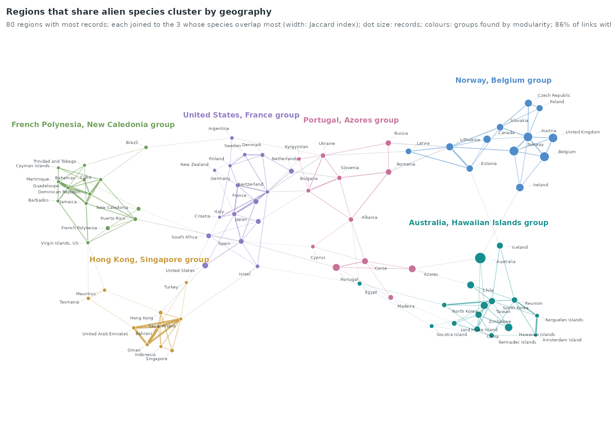
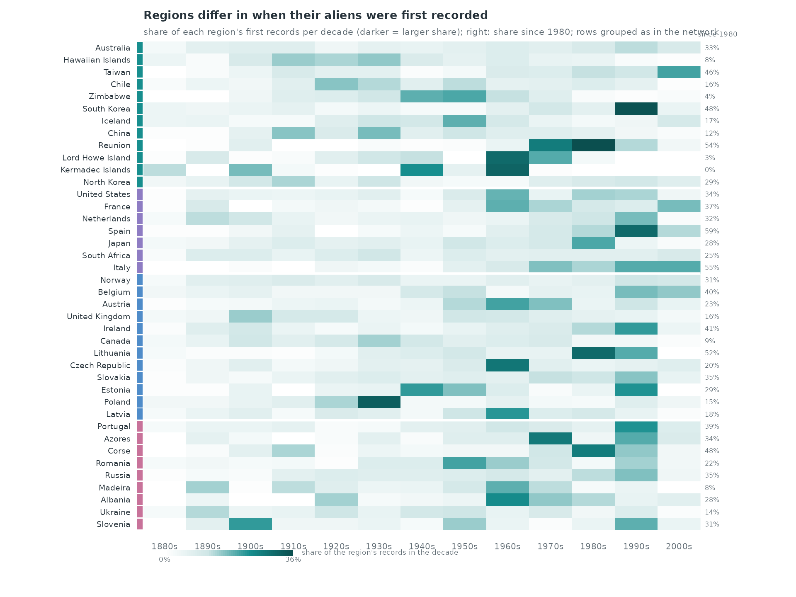
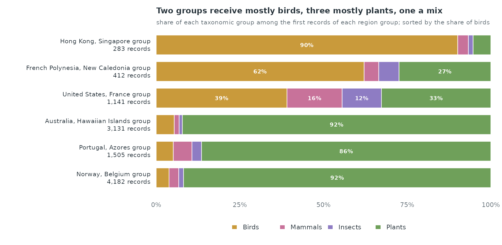
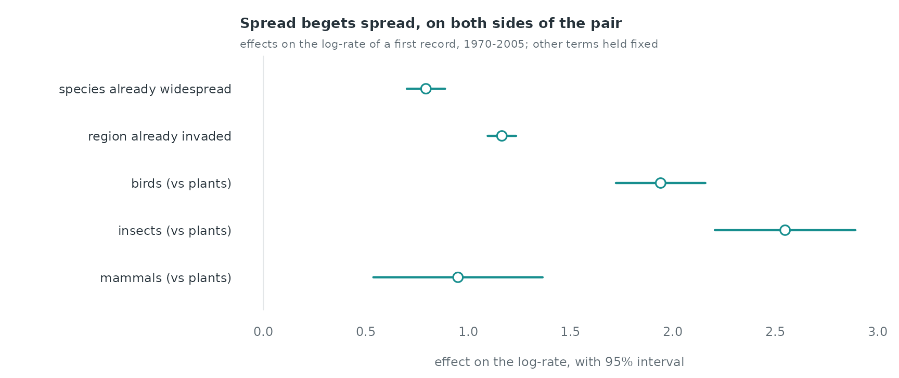
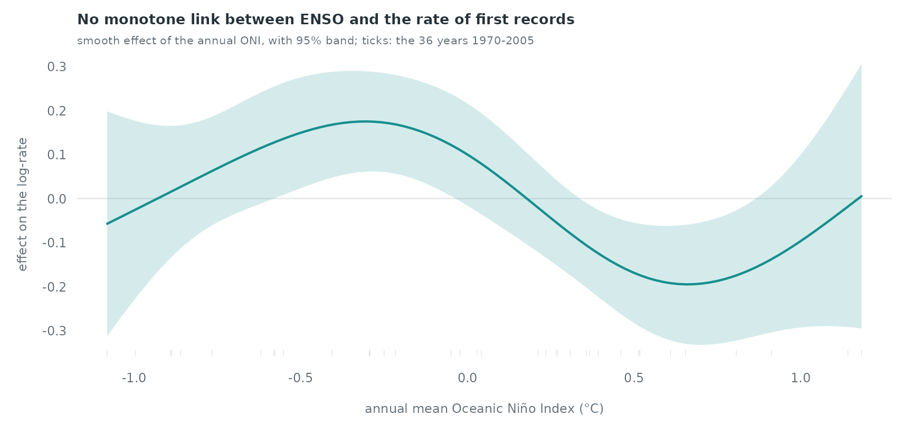

Case study: first records of alien species, 1880–2005
Source:vignettes/articles/case-invasions.Rmd
case-invasions.RmdAlien species reaching new regions
alien_invasions holds the first records of established
alien mammals, birds, insects and plants in regions of the world from
1880 to 2005 (Juozaitienė et al. 2023, from the database of Seebens et
al.). Each record is a one-shot relational event: species s
is first recorded in region r in year stop,
and the pair cannot fire again. The species-invasion vignette builds the
method on simulated data; this case study applies it to the observed
records. It asks three questions: do species that have already spread
keep spreading, do regions that have received many aliens keep receiving
them, and does the El Niño/Southern Oscillation (ENSO) change the yearly
rate of new records?
data(alien_invasions)
a <- alien_invasions
c(records = nrow(a), species = length(unique(a$species)), regions = length(unique(a$region)),
first = min(a$stop), last = max(a$stop))
#> records species regions first last
#> 11730 2929 259 1880 2005
round(prop.table(table(a$taxonomy)), 3)
#>
#> Birds Insects Mammals Plants
#> 0.166 0.040 0.058 0.73661.1% of the records fall after 1950. The most widespread species, Columba livia, has first records in 174 regions.
Which regions share their aliens
Two regions that receive the same species are linked by trade, travel or climate. The network joins each of the 80 regions with most records to the three regions whose alien species overlap most with its own (Jaccard index of the two species sets); groups are found by modularity (Louvain).
par(mar = c(0.5, 0.5, 2.6, 0.5))
nodes <- data.frame(id = lay$id, x = lay$x, y = lay$y, size = as.numeric(reg_n[lay$id]),
col = gcol[as.character(lay$group)], label = lay$id)
same <- grp[keep$from] == grp[keep$to]
draw_network(nodes, data.frame(from = keep$from, to = keep$to, w = keep$w,
col = ifelse(same, gcol[as.character(grp[keep$from])], "#B4BBC0")),
label_cex = 0.42, node_scale = c(0.5, 2.4))
for (g in names(gsize)) { # name each group beside its cluster
k <- lay$group == as.character(g)
text(mean(lay$x[k]), max(lay$y[k]) + 0.045, paste(gname[[g]], "group"), col = gcol[[g]], font = 2, cex = 0.72, xpd = TRUE)
}
title_left("Regions that share alien species cluster by geography",
sprintf("80 regions with most records; each joined to the 3 whose species overlap most (width: Jaccard index); dot size: records; colours: groups found by modularity; %s of links within a group",
pct(within, 0)))
The 6 groups are: Australia, Hawaiian Islands (16 regions); United States, France (16 regions); French Polynesia, New Caledonia (14 regions); Norway, Belgium (12 regions); Portugal, Azores (12 regions); Hong Kong, Singapore (10 regions). 85.8% of the drawn links join two regions of the same group.
When the records arrive
par(mar = c(4.2, 9, 2.6, 6))
ramp <- grDevices::colorRampPalette(c("#FFFFFF", "#CFE6E6", pal[1], "#0B4F4F"))(64)
image(seq_along(dec), seq_along(r40), t(S[rev(r40), ]), col = ramp, axes = FALSE, xlab = "", ylab = "",
zlim = c(0, max(S)))
cut <- which(head(grp[rev(r40)], -1) != tail(grp[rev(r40)], -1)) + 0.5
abline(h = cut, col = "white", lwd = 3)
rect(0.35, seq_along(r40) - 0.45, 0.48, seq_along(r40) + 0.45, col = gcol[as.character(grp[rev(r40)])], border = NA, xpd = TRUE)
axis(2, at = seq_along(r40), labels = rev(r40), las = 1, tick = FALSE, cex.axis = 0.6, line = -0.2, col.axis = ink)
axis(1, at = seq_along(dec), labels = paste0(dec, "s"), tick = FALSE, cex.axis = 0.65, col.axis = ink_soft, line = -0.6)
# the share recorded since 1980, per region, at the right
text(length(dec) + 0.6, seq_along(r40), pct(rowSums(S[rev(r40), c("1980", "1990", "2000")]), 0), cex = 0.5,
col = ink_soft, adj = 0, xpd = TRUE)
mtext("since 1980", side = 3, at = length(dec) + 0.9, line = 0.1, cex = 0.55, col = ink_soft)
# colour scale
zs <- seq(0, max(S), length.out = 64); xs <- seq(1, 4, length.out = 65)
rect(head(xs, -1), -1.6, tail(xs, -1), -1.1, col = ramp, border = NA, xpd = TRUE)
text(c(1, 4), -1.9, pct(c(0, max(S)), 0), cex = 0.55, col = ink_soft, xpd = TRUE)
text(4.2, -1.35, "share of the region's records in the decade", adj = 0, cex = 0.55, col = ink_soft, xpd = TRUE)
title_left("Regions differ in when their aliens were first recorded",
"share of each region's first records per decade (darker = larger share); right: share since 1980; rows grouped as in the network")
Each row shows how one region’s first records spread over the decades. The share recorded since 1980 is 55% in the group of Hong Kong, Singapore, 38% in the group of French Polynesia, New Caledonia, 38% in the group of United States, France, 33% in the group of Portugal, Azores, 28% in the group of Norway, Belgium, 27% in the group of Australia, Hawaiian Islands. Across the 6 groups it correlates at 0.93 with the share of birds among the records.
Which kinds of species go where
taxa <- c("Birds", "Mammals", "Insects", "Plants")
fl <- table(factor(sub$taxonomy, taxa), factor(gl, gname))
P <- prop.table(fl, 2)
o <- order(P["Birds", ]) # most birds at the top
tcol <- c(Birds = pal[6], Mammals = pal[5], Insects = pal[2], Plants = pal[3])
par(mar = c(4.6, 14, 2.6, 1))
bp <- barplot(P[, o], horiz = TRUE, col = tcol, border = "white", axes = FALSE, names.arg = rep("", length(o)),
space = 0.35, xlim = c(0, 1))
axis(2, at = bp, labels = paste0(gname[o], " group\n", fmt(colSums(fl)[o]), " records"), las = 1, tick = FALSE,
cex.axis = 0.68, col.axis = ink, line = -0.5)
axis(1, at = seq(0, 1, 0.25), labels = pct(seq(0, 1, 0.25), 0), tick = FALSE, cex.axis = 0.7, col.axis = ink_soft, line = -0.6)
mid <- apply(P[, o], 2, function(v) cumsum(v) - v / 2)
for (i in seq_along(o)) for (k in taxa) if (P[k, o[i]] >= 0.08)
text(mid[k, i], bp[i], pct(P[k, o[i]], 0), cex = 0.62, col = "white", font = 2)
legend("bottom", inset = c(0, -0.25), legend = taxa, fill = tcol, border = NA, horiz = TRUE, bty = "n", cex = 0.7,
text.col = ink, xpd = TRUE)
bird_groups <- colnames(fl)[fl["Birds", ] > fl["Plants", ]]
n_b <- sum(P["Birds", ] > 0.5); n_p <- sum(P["Plants", ] > 0.5); n_m <- ncol(P) - n_b - n_p
num <- c("No", "One", "Two", "Three", "Four", "Five", "Six")
title_left(paste0(num[n_b + 1], if (n_b == 1) " group receives" else " groups receive", " mostly birds, ",
tolower(num[n_p + 1]), " mostly plants", if (n_m) paste0(", ", tolower(num[n_m + 1]), " a mix") else ""),
"share of each taxonomic group among the first records of each region group; sorted by the share of birds")
Birds outnumber plants among the records of the groups of United States, France; French Polynesia, New Caledonia; Hong Kong, Singapore, where they make 39%, 62%, 90% of the records; plants make 92%, 92%, 86% of the records in the other groups. The groups of the network therefore follow partly what kind of species a region receives, as well as where it lies.
A relational event model, 1970–2005
We model the 4,909 first records from 1970 to 2005. Species and
regions are two node sets (mode = "two"), and a pair leaves
the risk set once it has fired (risk = "remove"); the pairs
recorded before 1970 are excluded from the start
(exclude_pairs). ENSO takes one value per year for every
pair, so the controls are drawn with time-shifted sampling
(shift = "exponential"), which gives each control its own
year. Starting in 1970 keeps the page fast: the sampler enumerates the
at-risk pairs of every shifted event.
ev_all <- data.frame(sender = a$species, receiver = a$region, time = a$stop)
ev <- ev_all[ev_all$time >= 1970, ]
prior <- ev_all[ev_all$time < 1970, ]
cc <- sample_non_events(ev, mode = "two", risk = "remove", seed = 1,
shift = "exponential", window = c(1970, 2005),
exclude_pairs = prior[, c("sender", "receiver")])
c(mean_shift_years = attr(cc, "shift")$mean, events_without_control = length(attr(cc, "shift")$uninformative))
#> mean_shift_years events_without_control
#> 19.03769 0.00000Covariates of each row, evaluated at its own time:
-
species spread: regions where the species was
already recorded (
sender_outdegree), counting the records before 1970 (prior_log); -
region pressure: species already recorded in the
region (
receiver_indegree); - taxonomic group of the species (plants as reference);
-
ENSO: the annual mean of the Oceanic Niño Index
(
oni, NOAA), the instrumental record, in the row’s year.
cc <- endogenous_features(cc, stats = c("sender_outdegree", "receiver_indegree"),
history_log = ev, prior_log = prior)
cc$log_spread <- log1p(cc$sender_outdegree)
cc$log_region <- log1p(cc$receiver_indegree)
tax <- setNames(a$taxonomy, a$species)[cc$sender]
for (k in c("Birds", "Insects", "Mammals")) cc[[k]] <- as.integer(tax == k)
data(oni)
oni_year <- tapply(oni$anomaly, oni$year, mean)
cc$enso <- as.numeric(oni_year[as.character(floor(cc$time))])
aggregate(cbind(log_spread, log_region, enso) ~ event, cc, mean)
#> event log_spread log_region enso
#> 1 0 1.116754 2.150491 0.005403171
#> 2 1 1.551239 4.533889 -0.046330889
cv <- c("log_spread", "log_region", "Birds", "Insects", "Mammals", "enso", "time")
w <- widen_case_control(cc, covariates = cv)
fit <- rem(~ log_spread + log_region + Birds + Insects + Mammals + nl(enso, k = 5) + nl(time, k = 5),
data = w, method = "gam")
est <- summary(fit)$p.table[, c("Estimate", "Std. Error")]
round(est, 3)
#> Estimate Std. Error
#> log_spread 0.794 0.048
#> log_region 1.165 0.035
#> Birds 1.940 0.111
#> Insects 2.549 0.175
#> Mammals 0.950 0.211
summary(fit)$s.table
#> edf Ref.df Chi.sq p-value
#> s(.X_enso):.I 3.255127 3.687106 11.643179 0.03765417
#> s(.X_time):.I 2.771593 3.291811 8.242801 0.05984530
lab <- c(log_spread = "species already widespread", log_region = "region already invaded",
Birds = "birds (vs plants)", Insects = "insects (vs plants)", Mammals = "mammals (vs plants)")
e <- est[names(lab), 1]; se <- est[names(lab), 2]; y <- length(lab):1
par(mar = c(3.4, 12, 2.8, 1))
plot(e, y, xlim = range(0, e - 1.96 * se, e + 1.96 * se), ylim = c(0.5, length(lab) + 0.5), type = "n",
axes = FALSE, xlab = "", ylab = "")
abline(v = 0, col = rule, lwd = 1.2)
segments(e - 1.96 * se, y, e + 1.96 * se, y, col = pal[1], lwd = 2.2)
points(e, y, pch = 21, bg = "white", col = pal[1], cex = 1.3, lwd = 1.6)
axis(1, tick = FALSE, cex.axis = 0.75, col.axis = ink_soft, line = -0.5)
axis(2, at = y, labels = lab, las = 1, tick = FALSE, cex.axis = 0.75, col.axis = ink, line = -0.6)
mtext("effect on the log-rate, with 95% interval", side = 1, line = 2, cex = 0.75, col = ink_soft)
title_left("Spread begets spread, on both sides of the pair",
"effects on the log-rate of a first record, 1970-2005; other terms held fixed")
Holding the other terms fixed, one unit of
log(1 + regions already reached) raises the log-rate of a
species’ next first record by 0.79 (s.e. 0.05), and one unit of
log(1 + species already recorded) raises a region’s by 1.16
(s.e. 0.04). The taxonomic coefficients compare a species of each group
with a plant species of the same spread: a control species is drawn from
all 2,929 species, most of them plants, and a bird, insect or mammal
reaches a new region at a higher rate per species.
par(mar = c(3.4, 3.8, 2.6, 1))
draw_smooth(d_enso, xlab = "annual mean Oceanic Ni\u00f1o Index (\u00b0C)", rug = oni_year[as.character(1970:2005)])
title_left(if (lin[["Pr(>|z|)"]] > 0.05) "No monotone link between ENSO and the rate of first records" else
"The rate of first records changes with ENSO",
"smooth effect of the annual ONI, with 95% band; ticks: the 36 years 1970-2005")
The ENSO term rests on 36 distinct yearly values. The smooth uses 3.3
effective degrees of freedom (p = 0.04) and has no monotone shape; its
band leaves zero from -0.58 to -0.05 °C (above zero) and from 0.36 to
0.86 °C (below zero). Entered linearly, ENSO has a coefficient of -0.127
(s.e. 0.067) per °C. With so few independent values, a curve of this
shape is also what a year-to-year fluctuation in recording effort
produces, so the data do not support an ENSO effect on the yearly rate.
The annual ONI correlates at 0.23 with the tree-ring reconstruction
enso_nino34 over 1950–2005: the two indices are not
interchangeable, and the instrumental one is the closer measure of the
years modelled here. The trend nl(time) absorbs the growth
of recording effort over the decades.
What is not in the model
- Distance, trade, colonial history, climate match and land use: the source release carries them for every species–region interval (535,020 rows) and can be downloaded to fit the full model of Juozaitienė et al. (2023).
- A record dates the first observation, not the arrival; survey effort differs between regions and decades.
- The records before 1970 enter only through the history and the exclusion of pairs that had already fired.